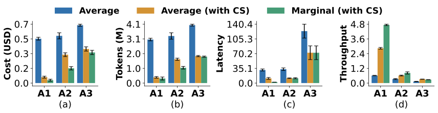

Multi-step reasoning strategies (Tree-of-Thought, ReAct, RAP, FoA, ReST-MCTS*, etc.) are highly repetitive —
~50% of prompts are duplicates both within a single method execution and across methods on the same task.
Cache Saver exploits this redundancy across three practical scenarios:

Three practical scenarios using GPT-4.1-Nano across the benchmarks of Game of 24, HumanEval, and SciBench.
The figure shows Cache Saver's impact across three practical ML scenarios.
A1-Hyperparameter tuning: grid search over Tree-of-Thought configurations (tree width, depth, number of evaluations).
A2-Ablation analysis: testing three variations of the FoA algorithm (removing the selection phase, backtracking, or resampling).
A3-Benchmarking: comparing entirely different reasoning strategies (ToT, GoT, FoA).
The blue bars show the cost without Cache Saver.
The orange bars show the average cost with Cache Saver. Because experiments share prompts, cached responses are reused and average cost drops significantly.
The green bars show the marginal cost, that is the added cost of incorporating one more configuration, variation, or method into the experiment.
The reuse potential depends on how similar the experiments are: hyperparameter tuning (A1) achieves the highest savings (6x lower cost, tokens, and latency) since different configurations of the same method share most prompts. Ablation analysis (A2) achieves 2.5x savings. Finally, benchmarking across different methods (A3) still achieves 2x savings, a notable finding since even structurally different reasoning strategies share significant prompt overlap. These savings are on top of existing platform-level optimizations (paged attention, KV caching, prefix sharing, etc.).